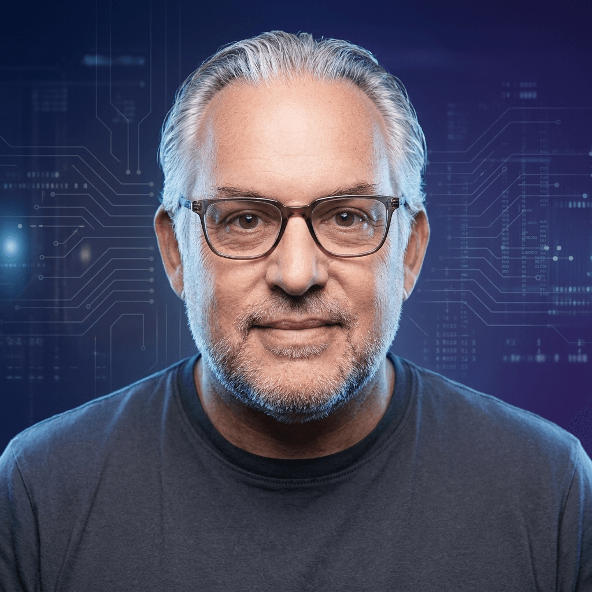

Sites & médias
J’ai développé beaucoup de sites personnels ou pour de petites entreprises, mais aussi de plus importants — comme celui de Radio Contact (de l’époque) et de Fun Radio.
olivier@maghe:~$
Le développement web fait partie de ma vie depuis le milieu des années 90. Une époque où il fallait ouvrir trois programmes pour accéder à l’Internet naissant — et une condition sine qua non : personne ne pouvait téléphoner !

J’ai développé beaucoup de sites personnels ou pour de petites entreprises, mais aussi de plus importants — comme celui de Radio Contact (de l’époque) et de Fun Radio.
Au pôle informatique, j’ai mis en place le nouvel intranet en collaboration avec le siège parisien. Migré aux ressources humaines, j’ai développé de multiples outils pour faciliter la vie des équipes.
J’ai développé un programme cloud : multi-agendas, multi-ressources, multi-salles, avec rappels SMS personnalisés — ça n’existait pas à l’époque. J’ai quitté l’aventure, mais le produit existe toujours.
Après la restructuration massive d’AXA en 2017, je suis devenu directeur informatique d’une société qui fabrique des échelles de secours. Cette aventure a été de courte durée.
Depuis fin 2017, je suis en poste chez Xaurum Belgium. Nous y fabriquons un Learning Management System (LMS), un portail e-learning, un Test Maker, un Quality Sensor.
C’est une entreprise qui n’a pas de bureau, ce qui me permet de travailler depuis n’importe où. Nous gérons le LMS de gros clients : banques, assurances, hôpitaux, aéroport de Bruxelles, Croix-Rouge de Belgique, Engie et ses filiales, le Fopas, le port d’Anvers, ou encore la formation des kinés belges.